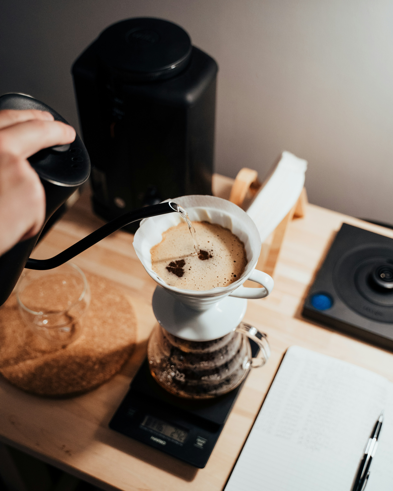

Café filtrado
Disfrutá de los aromas y sabores únicos de nuestros cafés preparados con métodos de filtrado.
Descubrí una nueva forma de disfrutar el café de especialidad. En ORIGEN seleccionamos granos de calidad y cuidamos cada detalle de su preparación.



En ORIGEN Café creemos que cada taza cuenta una historia. Nos apasiona compartir el mundo del café de especialidad y crear experiencias únicas.
Disfrutá de los aromas y sabores únicos de nuestros cafés preparados con métodos de filtrado.
Una preparación intensa y equilibrada para los amantes del café.